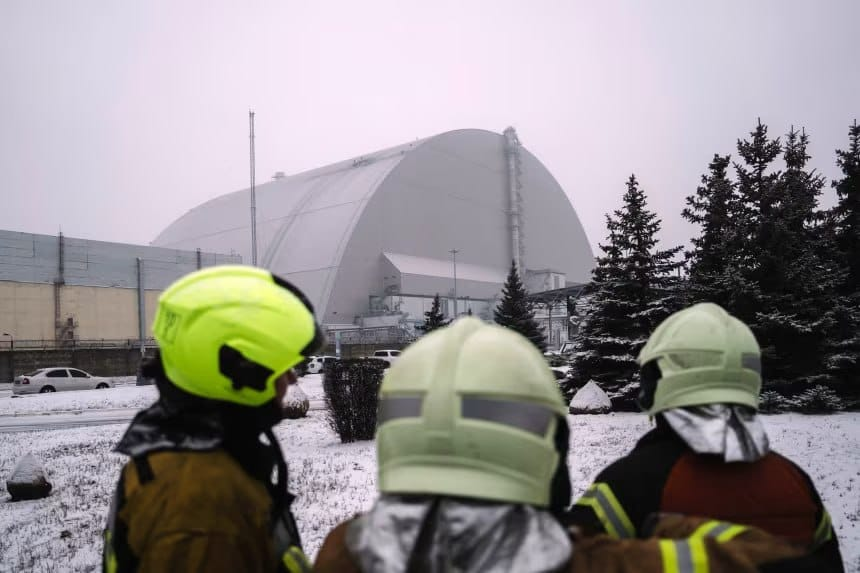

世界苦茶12月07日新闻 | 24条 | 澤連斯基與美國特使進行建設性會談

澤連斯基與美國特使進行建設性會談 | 美国国安战略文件强调台湾问题 | B站爆火《芳華》視頻被下架 | 南非發生槍擊案11人死亡
苦茶数据
美元兑人民币：7.06（昨日7.06，前日7.06）
美元兑日元：155.37（昨日154.89，前日154.95）
上证指数：休市（昨日3902，前日3875)
标普500指数：休市（昨日6870，前日6857）
比特币：89567（昨日89344，前日92105）
布伦特原油：63.75（昨日63.24，前日63.34）
中国新闻
• 引中国年轻人怀念文革 爆红《芳华》解说被下架。
一名电影博主对文化大革命题材电影《芳华》的解说，最近在中国网络爆红。在以年轻受众为主的视频网站哔哩哔哩上，相关解说视频触发一股怀念文革的思潮，在播放量飙破3500万后被下架。拥有逾百万粉丝的B站博主“聊会电影吧”，11月2日起连续更新三期解说《芳华》的视频，总时长逾1小时40分。他的解读视频在上周六完成最后一期更新后，本周以来在中国社媒平台快速出圈引起讨论，即便是深夜凌晨时段，也一度有数万人同时在线观看。2017年上映的电影《芳华》，是中国知名导演冯小刚的作品，根据曾是解放军舞蹈演员的严歌苓同名小说改编，讲述了上世纪70年代文革后期，一群风华正茂的文艺兵的故事。
• 香港警方因发布有关一场致命火灾的帖文拘捕一名男子。
香港警方周六逮捕一名男子，成为首宗公开确认与批评当局有关的一宗高层住户火灾事件被捕案。该火灾造成至少159人死亡。警方称，他被控在社交媒体发布“带有煽动意图的信息”。警方国安处总警司史蒂夫·李对记者说：“这些内容主要包括煽动公众对香港特区政府和中央政府的仇恨。比如，他指责香港和中央政府利用悲剧制造混乱和动荡。”李说：“这是完全不可能的。” 本地媒体此前报道了其他拘捕，但当局尚未证实。11月26日发生在王福苑住宅综合体的火灾，引发了关于政府问责的争论。当局已警告不要利用火灾企图破坏特区政府或北京中央政府。香港是中国的一部分，但与邻近的澳门一样，拥有自己的法律制度和法律。
• 剑桥前校长奈杰尔·斯莱特投身中国生物科技革命。
这位资深学者将与中国科学家合作，利用疫苗技术开展肿瘤免疫治疗，研发新一代癌症疗法。这位在剑桥投身科学与创新工作逾三十年的资深学者已加入位于杭州的浙江大学，此举既出于个人抱负，也反映全球科研格局的调整。“虽然我与浙江大学合作的主要动机是科研，但我非常喜欢并从教导热情好学的本科生中获得巨大满足感，他们对生物医学学习充满热情，”他上周表示。斯莱特曾任化学工程学教授，菲茨威廉学院院长及剑桥化学工程系主任。由于疫情相关的旅行限制，他在去年十月正式在浙江大学就任，较原计划晚了四年。斯莱特原本计划在2020年依剑桥大学年龄限制政策退休后即刻转赴浙江大学。
• 中国是否在转变政策并接受朝鲜为拥核国家。
与近期不同的是，北京在一份白皮书中没有提及“朝鲜半岛无核化”。分析人士称，中国在新政策文件中省略“朝鲜半岛无核化”一词，暗示其对朝鲜作为拥核国家的“默许”，并将与华盛顿的战略对抗置于优先位置。上月底，中国发布了一份关于军备控制，裁军与防扩散的白皮书，阐述了国家防务和核政策。该文件是对2005年白皮书的更新，出现了一个显着变化——在整体“不扩散”条款中，没有提及中国传统上对半岛无核化的支持。
• 中国官方媒体呼吁停止针对干部的点名批评行动。
中国官方媒体呼吁停止对基层干部的点名羞辱运动 一系列评论指出，侮辱官员会适得其反，应更多努力解决被认为表现不佳的根本原因 东部浙江省宣传部本周成为最新就此问题发声的地方部门。该部周二在其官方社交媒体账号发布的评论中警告，这种做法很可能会适得其反。文章批评用“冰箱式”官员来形容那些“不吭声、冷漠、不作为”；称为“跑步机”类型的干部“看起来很忙、汗流浃背但工作毫无进展”；或称“口红式”干部只做表面文章、不做深入工作。文章称，这种“贴标签式评估”带有哗众取宠的意味，并警告说，它阻碍了对基层官员所面临的困境和问题进行正确理解。
• 德国外长重启访华行程 聚焦经贸稀土等课题。
德国外交部长瓦德富尔重启早前突然取消的访华行程，星期天前往中国沟通两国间悬而未决的经贸纷争问题，为总理默茨上任以来的首次访华铺路。据法新社报道，德国外交部发言人星期五公布瓦德富尔访华消息，称他此行将与中国外长王毅及其他高级官员会谈。发言人说，会谈将聚焦欧中经贸关系，瓦德富尔将就关键原材料和技术供应链的安全与可靠性表达关切，强调稀土出口管制等限制措施会对德国及欧洲企业造成不利影响。中国过去一年加强对稀土出口的管控，影响汽车、电子和国防工业等产业。尽管北京最近同意暂停部分管制一年，德国制造商依然受到冲击。德国副总理兼财政部长克林拜尔上月访华时曾说，中国已作出“明确承诺”，将确保关键原材料供应。
• 习近平马克龙会谈 学者分析台湾和乌克兰问题未符对方预期。
中国国家主席习近平星期四在北京人民大会堂同法国总统马克龙举行会谈时说，中法应在彼此核心利益和重大关切问题上，相互理解和支持；马克龙则呼吁，中国加大在法国和欧洲投资力度以重塑贸易关系平衡，并与法国加强合作促进俄乌和平。中法两国签署12项合作协议，涵盖应对老龄化、双边投资、核能合作及大熊猫保护等。中国和欧洲因中国稀土管制和产能过剩、俄乌战争等议题矛盾加深，中日外交纷争则因台湾问题而加剧。马克龙在经贸争端和地缘政治日趋复杂的背景下，第四次对中国进行国事访问，随行的有近40名企业高管。路透社分析，马克龙访华寻求缔造外交成就，争取在第二个任期结束前留下政绩。
• 湖北一地公告：寻找190万枚USDT币原主人。
•
近日，湖北咸宁市嘉鱼公安发布公告，寻找一笔涉敲诈勒索案的虚拟货币原主人，虚拟货币钱包内共有USDT币约190万枚。根据最新的市场汇算数据，大约价值 1343.36万元人民币。据悉，警方在侦办一起敲诈勒索案和一起侵犯公民个人信息案件过程中，从犯罪嫌疑人曾某家中及租住房内搜查出部分涉案物品，并在该涉案物品中发现虚拟货币钱包，钱包内共有USDT约190万枚。警方要求原主六个月内持合法证明材料、身份证等前去认领。警方表示，截止日期后仍无人认领或无法提供合法依据的，将依据相关法律规定，依法将上述涉案物品及孳息上缴国库。
印太新闻
• 陆配被指宣扬武统遭废居留许可 返陆后批台社会“不健康”。
一名中国大陆配偶因在社交媒体上经营“中国人民解放军”社群被指宣扬武统，遭台湾官方以危害国安为由废止依亲居留许可。这名陆配本周返回中国大陆后，发文批评台湾社会“不健康”。综合《自由时报》和《中国时报》报道，曾任职台湾科技公司华硕的陆配钱丽，在脸书经营名为“中国人民解放军”的社团，并发表过统一言论，被台湾内政部等机构认定“有危害台湾国家安全与社会安定之虞”，在8月被注销台湾户籍，身份退回“依亲居留”。不过相关机构再次跨部门审议后，决议废止钱丽的依亲居留，台湾移民署星期一送达通知书后正式生效。钱丽依法不得使用台湾全民健康保险，也不能工作，她随后在星期二从华硕离职。
• 美国最新国家安全战略涉台篇幅增加 阻涉台冲突为优先事项。
特朗普政府发布的最新《美国国家安全战略》以更长篇幅阐述台湾议题，将阻止涉台冲突列为“优先事项”，并要求盟友投入更多资源，加强集体战略防御。受访学者对这份文件看法不一，有学者认为它淡化了台湾问题，也有学者认为这份文件的涉台表述更趋现实，显示美国保护台湾是为了物质层面的战略利益。国家安全战略是美国新总统上任时，向国会提交的战略文件。星期五公布的这份最新文件，是特朗普今年1月上任后的第一份国家安全战略文件。台湾被纳入“阻止军事威胁”章节，在三个段落中八次提及。相比特朗普2017年第一任期时发布的国家安全战略在一个段落中三次提及台湾，以及拜登政府2022年文件中一个段落六次提及。
• 专家们如何看待欧盟和德国的对台政策。
2025年12月6日近日柏林的一场会议显示了一个清晰的趋势：台湾在德国和欧洲的存在感，比起几年前，显着增强。然而欧盟和德国并没有一套连贯的台湾政策。有中国问题专家指出，根本问题在于德国把台湾政策完全放进对华政策的框架里，首先被拿来衡量的是“中国会不会不高兴”。十二月四日至五日，第四届柏林台湾会议在欧洲议会和欧洲理事会驻德办事处——欧洲之家举行。会议为期两天，主题是“勇闯风暴”，来自十余个国家的学者、政策制定者与非政府组织代表齐聚一堂，讨论主题从能源安全到欧洲印太政策，也包括能源安全、科技与文化交流以及台德少数族群的议题。
• 民调：美国公众支持在全球事务中发挥积极作用，包括保卫台湾。
罗纳德·里根研究所的一项民调显示，美国公众对全球事务的看法与唐纳德·特朗普的做法不一致。这一观点与美国总统唐纳德·特朗普的孤立主义倾向和向国内安全转移的政策形成对比。分析人士称，这种分歧可能在台湾海峡危机发生时“使决策复杂化”。根据该研究所周四公布的年度调查报告——该研究所是由这位前总统创建的美国非营利组织——64%的美国人表示美国应“更加参与并在国际事务中发挥领导作用”，这是八年民调中的“历史最高值”，而选择减少参与者为33%。接受调查的美国人中近九成——87%——也表示美国拥有世界上最强大的军队很重要。与此同时。
• 新德里外交平衡术：美制裁下印俄敲定2030合作计划。
2025年12月6日俄罗斯总统普京周五与印度总理莫迪举行会谈，同意将强化两国在能源、核能和军事技术上的长期合作。俄罗斯承诺继续为印度稳定供应能源。普京此行发生在在俄乌战争、美国制裁俄罗斯能源产业并上调印度关税的背景下，考验新德里如何在莫斯科与华盛顿之间保持平衡。俄罗斯总统普京周四抵达印度，在新德里机场受到莫迪的热情迎接。周五印俄在年度峰会上举行会谈。会谈结束后，普京和莫迪宣布，双方已敲定一项覆盖至2030年的经济合作计划，该计划将有助于双方实现经济多元化。
**• 阿富汗与巴基斯坦边境12月5日夜间至6日黎明发生两军交火，造成至少5名阿富汗人死亡、5名阿富汗人受伤、3名巴基斯坦人受伤。双方均指责对方违反停火协议。 **
科技新闻
• 美国高级官员称欧盟法规“削弱”北约关系。
美国副国务卿警告称，欧盟推进绿色议程并对美企实施科技法规正在削弱跨大西洋联盟。“欧洲各国不能在一方面指望美国保障自身安全的同时，通过欧盟积极地破坏美国自身的安全，”克里斯托弗·兰道周六在社交媒体平台X上写道。本周早些时候，欧盟委员会因违反欧盟透明度规则对X处以1.2亿欧元罚款后，数位美国高级官员对布鲁塞尔提出批评。亿万富翁、X所有者埃隆·马斯克——美国总统唐纳德·特朗普及更广泛的MAGA运动的重要支持者——威胁要进行报复，并呼吁“废除欧盟”。
• 马斯克威胁将对那些对X处以1.2亿欧元罚款的个人“作出回应”。
埃隆·马斯克在他的社交媒体平台 X 因违反透明度规定被欧盟罚款后猛烈抨击欧盟，并警告说他的回应将针对那些对该处罚负有责任的高官。“‘欧盟’不仅对[X]处以了这项疯狂的罚款，而且还针对我个人，这更是疯狂！”这位特斯拉首席执行官在 X 上写道。“因此，似乎有必要将我们的回应不仅针对欧盟本身，也针对那些对我采取这项行动的个人。”
经济新闻
• 中美高层再就经贸问题通话 承诺压缩问题清单。
中美高层官员再度围绕经贸问题通话，就妥善解决经贸领域彼此关切进行交流，并称将不断拉长合作清单、压缩问题清单，显示中美经贸关系进一步趋稳。中国国务院副总理何立峰星期五与美国财长贝森特、贸易代表格里尔举行视讯通话。据中国官媒新华社报道，双方围绕落实中美两国元首釜山会晤和11月24日通话重要共识，就下一步开展务实合作和妥善解决经贸领域彼此关切，“进行了深入、建设性的交流”。报道也说，双方正面评价中美吉隆坡经贸磋商成果执行情况，表示要在两国元首战略引领下，继续发挥好中美经贸磋商机制作用，不断拉长合作清单、压缩问题清单，推动中美经贸关系持续稳定向好。
• 万科流动性压力加剧 寻求推迟兑付第二笔境内债券。
中国房地产巨头万科短期内寻求推迟兑付第二笔境内公开债券，显示万科面临的流动性压力进一步加剧。综合路透社、彭博社和澎湃新闻报道，万科境内债券“22万科MTN005”原定12月28日到期，须兑付金额37亿元。上海清算所星期五发布的文件显示，万科已请求债券持有人同意展期上述债务，并计划在12月22日召开持有人会议讨论相关方案。据彭博编制的数据，这笔三年期债券星期五下跌1.5元至16元，创发行以来新低。这是万科短期内披露的第二笔展期债券。本周万科已寻求将原定12月15日到期的一笔20亿元境内债券展期一年。
俄乌战争
• 冯德莱恩、梅尔茨：与比利时就俄罗斯资产的会谈“具有建设性”。
德国的弗里德里希·梅尔茨与欧盟委员会主席乌尔苏拉·冯德莱恩表示，他们就利用被冻结的数十亿俄罗斯资产为乌克兰提供资金一事与比利时进行了“建设性”会谈。梅尔茨周五匆忙赶往布鲁塞尔，试图说服比利时首相巴特·德韦弗放弃对用作担保向乌克兰发放贷款的1,650亿欧元被冻结俄罗斯国家资产现金价值的反对。冯德莱恩在社交平台X上发帖称：“鉴于当前地缘政治形势，时间至关重要，且对乌克兰的财政支持对欧洲安全具有核心重要性。我们在此事上进行了非常建设性的交流。
• 西尔斯基对英国广播公司表示，乌克兰不会接受任何要求割让领土的和平协议。
乌克兰不会接受任何要求割让领土的和平协议，苏尔斯基告诉英国广播公司 乌克兰最高指挥官奥列克桑德尔·苏尔斯基将军表示，基辅在与俄罗斯的任何和平协议中放弃领土都是“不可接受的”，并警告称莫斯科正利用持续的外交会谈作为“掩护”以武力夺取更多土地。苏尔斯基于12月5日通过口译在乌克兰东部未公开地点对天空新闻表示“公正的和平”只能从沿当前接触线停火并随后谈判开始。“我们的主要任务是保卫我们的土地，我们的国家和我们的人民，”他说。“对我们来说，当然不能简单地放弃领土。把我们的土地交出去这是什么意思？这正是我们战斗的原因，我们不能放弃我们的领土。
• 泽连斯基称与维特科夫和库什纳进行了“长时间且富有实质内容”的通话。
乌克兰总统弗拉基米尔·泽连斯基12月6日表示，他与乌方谈判代表同美国总统唐纳德·特朗普的特使史蒂夫·维特科夫和特朗普的女婿贾里德·库什纳进行了“一次长时间且内容充实”的电话会谈。乌克兰国家安全与国防委员会秘书鲁斯腾·乌梅罗夫和乌克兰武装部队参谋长安德里·赫纳托夫预计返国后将向泽连斯基当面汇报。泽连斯基在Telegram上写道：“乌克兰决心以诚信继续与美方合作，切实实现和平。我们就下一步和与美国的谈判方式达成了一致。”他补充说，双方“聚焦于许多方面，并快速讨论了能够保证停止流血，消除第三次俄罗斯入侵威胁以及消除俄罗斯多次违背承诺的威胁的关键问题”。
• 无人机袭击后切尔诺贝利的核防护罩已失效。
国际原子能机构（IAEA）表示，由于今年早些时候的无人机袭击，乌克兰切尔诺贝利核事故现场周围的防护罩已无法继续发挥其控制放射性废物的作用。国际原子能机构在周五的一份声明中称，切尔诺贝利新安全防护罩在2月份的无人机袭击中“严重受损”，已经“丧失了其主要安全功能，包括防护能力”。IAEA建议对这座巨大的钢结构进行重大改造。这座钢结构是几年前新建造的，目的是为了进行清理作业，并确保该地点的安全。
世界新闻
• 南非发生大规模枪击案，至少11人死亡。
南非一处宿舍发生大规模枪击，至少11人丧生，其中包括一名三岁儿童。周六凌晨，枪手闯入位于首都比勒陀利亚西部索尔斯维尔镇的一处场所，另有14人受伤。警方发言人准将阿思莲达·马特表示，至少三名身份不明的枪手开始对一群在饮酒的人“随意开火”。枪击动机尚不清楚，尚无人被捕。这是近年来这一犯罪高发国家接连发生的大规模枪击事件之一。据报道，枪手在当地时间04:30进入该场所并向一群正在饮酒的男子开火。遇害者中包括一名12岁男孩和一名16岁女孩。“我可以确认共有25人中弹，”马特说。她将该宿舍形容为“非法酒吧”。
• 白宫推出新网站羞辱记者 专家警告危及新闻自由。
2025年12月6日白宫推出一个新网站，罗列特朗普政府认定为“撒谎者”的记者和媒体。专家警告，这一举动危及新闻自由，并侵蚀美国民主。众所周知，美国现任政府对新闻行业很不友好。总统特朗普近日称一名询问他与爱泼斯坦丑闻关系的女记者是“小猪”。在周一的白宫记者会上，白宫新闻秘书卡罗琳·莱维特声称，她的工作大量时间都花在处理白宫记者们发表的所谓“失实描述”上。她说：“每天从这栋楼里源源不断流出的假新闻让人应接不暇。” 白宫新网站设立媒体“耻辱大厅” 为回应莱维特所称记者散布的“假新闻和攻击”，白宫新建了一个网站。该网站列出政府认定发表虚假。
• 美国专家小组投票决定停止建议所有新生儿接种乙型肝炎疫苗。
国免疫接种实践咨询委员会以8比3票通过，支持对母亲经检测为乙型肝炎阴性的婴儿实行“个别化决策”，不再长期性地建议出生后立即接种乙型肝炎疫苗。6月，持疫苗怀疑态度的卫生部长罗伯特·F·肯尼迪解除了ACIP所有成员的职务，并以对疫苗持批评态度的人士替换他们。自1991年以来，美国一直建议对新生儿接种乙型肝炎疫苗，数据表明自那时起这类疫苗估计已避免约9万例死亡。决定作出数小时后，总统唐纳德·特朗普下令最高卫生官员审查美国所有儿童疫苗接种建议。在一份白宫备忘录中，他要求审查“来自可比发达国家的核心儿童免疫建议的最佳做法”。